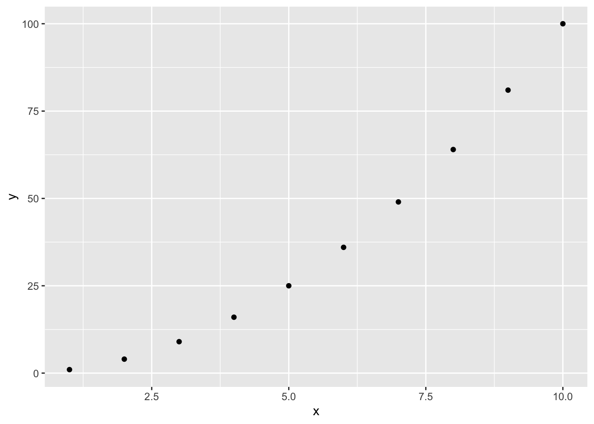
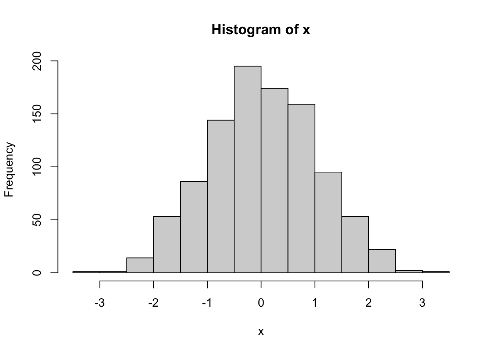

Plotting in R
R users have the choice between different plotting frameworks:
- base R plots
- package
ggplot2 - other packages like
lattice
This tutorial covers the main syntax for creating R plots using either base R or package ggplot2.
Plotting in base R
Base R offers a large number of plotting functions (e.g. plot, hist, barplot, boxplot, …). The choice of an adequate plotting function for a particular graphical representation in descriptive statistics is covered in “Task 1: Descriptive statistics”. Here, the common syntax of plotting functions is described, using the plot function as an example.
Arguments to plotting functions
Calling function plot with two arguments (x and y) already suffices to generate a first plot:

The plotting functions have a number of optional arguments customizing the appearance of the plot. The most important ones are:
type("p"for points,"l"for lines, …)main: plot titlexlab/ylab: axis labelsxlim/ylim: axis limits (provided as a two-element vector, likec(0,10))log: which axes to represent on log-scale,""(none, default)/"x"/"y"/"xy"
Let’s give the above plot a better appearance:
For a complete list of options to the plot function, see ?plot.default.
Modifying plots
To add graphical elements to an existing plot, you can use functions points and lines:
You always have to initialize a plot before using points/lines. The plot can also be initialized blank, but in this case you need to specify xlim and ylim values a priori (which is anyways a good idea if you want to draw several elements):
plot(NA, xlim = c(1,10), ylim = c(0,100), xlab = "x", ylab = "f(x) = x^2")
lines(x = x, y = y)
points(x = x, y = y)
Graphical parameters
In addition to the arguments to plotting functions, there are also so-called graphical parameters, defined in function par. Some of these can be set inside the plotting functions themselves and are passed on to par, others can only be defined by calling par. The list of options is very long and the details are quite technical. Below ist a list of the most important options, which can also be provided via plotting functions themselves (so you won’t need to call par for these):
lty: line type; 1=solid (default), 2=dashed, 3=dotted, 4=dotdash, …pch: plotting symbol (an integer between 0 and 25)col: color, specified by one of the following:- a string like
"red"or"blue"(colors()returns all 657 possible values) - an integer specifying a color inside the current color palette.
- a string like
Plotting with ggplot
Package ggplot2 is an implementation of the “Grammar of Graphics”, a theory for describing the syntax of graphics. It is one of the most widely of all R packages.
The ggplot syntax
Here, a brief overview on the syntax of the ggplot2 package will be given. There are a lot of useful online resources for further information; a good starting point is (https://ggplot2.tidyverse.org/)[https://ggplot2.tidyverse.org/].
Before starting, install (if not yet done) and load the package:
A ggplot consists of at least three parts:
- a call to
ggplot(without the “2” in the package name), defining the data to be plotted - the definition of asthetics via function
aes(which columns in the data frame to represent, and how) - one or more “geoms” like
geom_point(which geometrical object to draw)
Let’s recreate the simple plot of the quadratic function:

In contrast to the base R plotting functions, which directly produce a plot, ggplot by itself produces an object which is rendered as a plot when the object is printed. This means that the ggplot objects themselves can be modified, created in several steps, etc. before the actual plotting. For example, the above plot can be created stepwise and then printed by typing the variable name:

Advantages of ggplot over base R
The main advantage of ggplot2 over base R plots is the built-in support for common high-level graphical operations, like the following:
- color the plot per level of a factor
- draw one line per level of a factor (grouping)
- create a subplot per level of a factor (called “facetting”)
This allows to considerably shorten and simplify the commands needed to create such plots. Since pharmacometric plots are often quite complex, this feature makes ggplot2 well suited for this application.
As an example, let us consider again the birthwt dataset (from Tutorials “Data import/export” and “Manipulating data frames”) and make a complex plot:
birthwt <- read.csv("birthwt.csv")
ggplot(birthwt, aes(x = age, y = bwt, color = smoke, shape = ht)) +
geom_point() +
facet_wrap("race")In base R, creating such a plot would require at least 20 lines of complex code involving loops, low-level graphical parameters, data subsetting, etc.
Disadvantages of ggplot over base R
For very simple plots, base R functions provide a more intuitive interface. For example, compare the following commands:

## `stat_bin()` using `bins = 30`. Pick better value with `binwidth`.
At the other end of the complexity scale, base R graphics offer a slightly larger variety of plots than the ggplot2 package (although the coverage is quite extensive). This very uncommon case will not be discussed in this tutorial.
Graphical devices
If you’re using RStudio, the generated plots will appear in the “Plots” panel. This is one type of graphical output device, a so-called screen device.
The default graphical output device can be seen as follows (if you’re using RStudio, it should be the RStudio graphical device):
One way of creating a file (.pdf. or an image format like .png) from a plot is to use the interactive export in the RStudio “Plots” panel.
Alternatively, you can use a file device instead of the screen device, like pdf, postscript or png.
The syntax for exporting to a file is as follows:
File devices have further options, like width, height or font style, which you can look up in the function help.